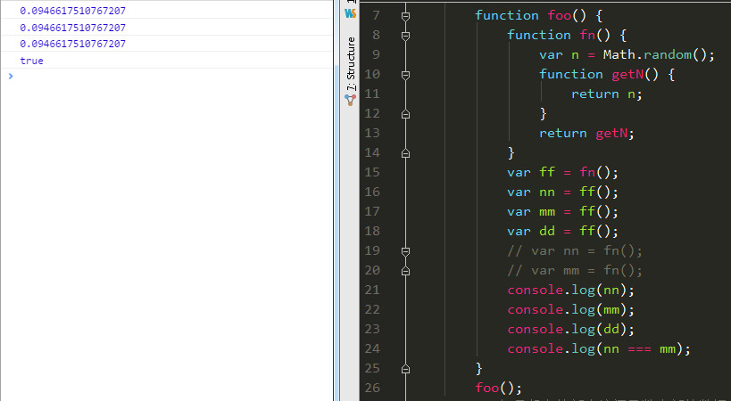

闭包
概念：指一个函数有权去访问另个函数内部数据。
☆ 缺点：
会造成函数内部的数据常驻内存，从而引发内存泄漏的问题。
- 为了防止闭包导致内存泄漏，在使用完毕后，将其赋值为null即可。会被垃圾回收清除。
- 小例子：调用多次得到一样的随机数

垃圾回收机制 GC
无效的变量占用的内存销毁掉。
多闭包结构
1 2 3 4 5 6 7 8 9 10 11 12 13 14 15 16 17 18 19 20 21 22 23 24 25 26 27
| function foo() { var n = 1, m = {age : 19}; function getN() { return n; } function getM() { return m; } var obj = {}; obj.getM = getM; obj.getN = getN; return obj; // return { // getM: getM, // getN: getN // } } var obj = foo(); obj.getM().age = 20; console.log(obj.getM().age); console.log(obj.getN()); var obj1 = foo(); console.log(obj1.getM().age); console.log(obj1.getN()); obj = null; obj1 = null;
|
闭包应用——计数器
？怎么统计某个构造函数创建多少个对象
1 2 3 4 5 6 7 8 9 10 11 12 13 14 15 16 17 18 19 20 21 22 23 24 25 26 27 28 29 30 31 32 33
| <script type="text/javascript"> function Counter(){ var n = 0;//初始化计时器 进入环境 return{ add:function(){ n++;//有引用n },getCounts:function(){ return n;//有引用n } } } var PersonCount = Counter(); //外部环境有变量接收 //创建一个独立的闭包环境 var animalCount = Counter(); function Person(){ PersonCount.add(); } var p0 = new Person(); var p1 = new Person(); var p2 = new Person(); var p3 = new Person(); var p4 = new Person(); console.log(PersonCount.getCounts());//5 console.log(animalCount.getCounts());//0 </script>
|
？闭包为什么能缓存数据？
因为函数内部有方法（函数）对其有引用，并且又将其返回到外部作用域上的一个变量接收。
对象的私有属性
阻止对象扩展
Object.preventExtensions();
1 2 3 4 5 6 7 8 9 10 11 12 13 14 15 16 17 18 19 20 21 22 23 24 25 26
| function person(name,age){ //工厂模式 //var obj ={}; //obj.name = name; //obj.age = age; //return obj; //闭包模拟私有属性 return { getName:function(){ return name; }, getAge:function(){ return age; }, setAge:function(){ age = val; } } } var xiaohong = person('小红',18); console.log(xiaohong.getName());//小红 console.log(xiaohong.getAge());//18 Object.preventExtensions(); xiaohong.name = '小绿'; console.log(xiaohong.getName());//小红 console.log(xiaohong.name);//小绿
|
闭包应用——沙箱模式
特性
1.能分割作用域，不会污染全局 fn
2.在分割后的作用域内部的代码要能自执行。 被调用fn().
结构
自执行的代码块
好处
不会污染全局变量（或者其他作用域的变量），并且能保证自己的代码安全执行。